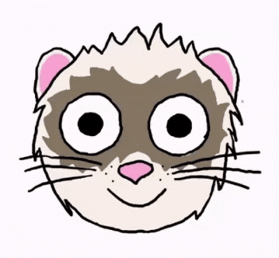
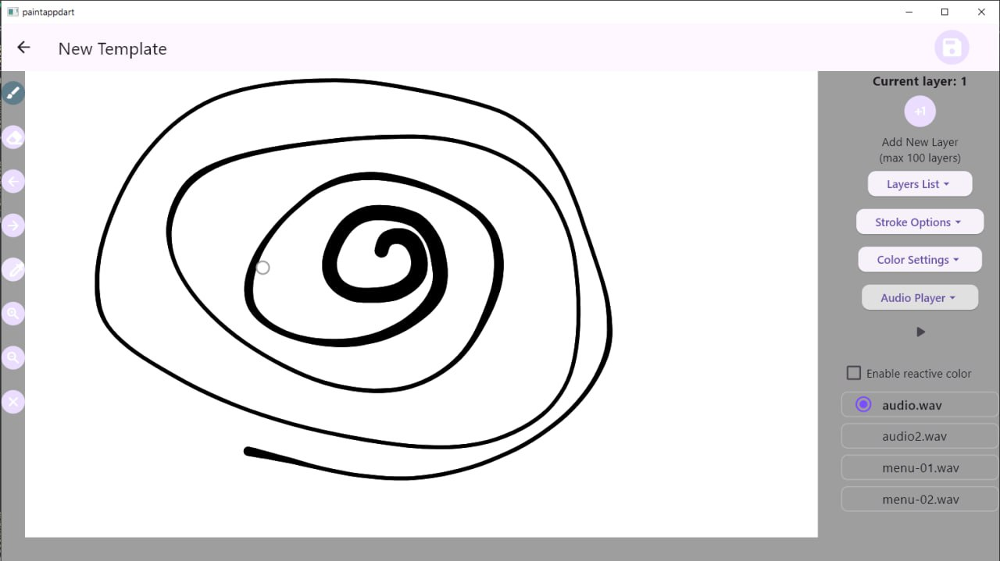

ReDrawMe audio extension
Iryna Netreba; projekt předmětu NI-CCC v zimním semestru 2025

Nápad
Cílem semestrální práce bylo rozšíření mé bakalářské práce, která představovala hru založenou na kreslení obrázků a jejich následném překreslování jinými uživateli. Součástí bakalářské práce byl implementovaný kreslicí editor, který zaznamenává uživatelskou kresbu jako seznam čar s různými parametry.
Na základě této funkcionality vznikl nápad vytvořit rozšíření, které by umožnilo přímo v editoru přehrávat hudbu a na základě dat z audio souboru dynamicky měnit velikost nakreslených čar tak, aby výsledkem byla animace reagující na hudbu. Principem je řešení podobné vizualizacím používaným v některých ekvalizérech nebo audio přehrávačích, s tím rozdílem, že obrázek pro animaci si uživatel vytváří sám.
Implementace
Práce byla implementována ve frameworku Flutter na platformě Windows, aby byla zachována technologická návaznost na bakalářskou práci, která tvoří základ tohoto projektu.
V rámci vývoje byl vytvořen audio zpracovávač, který analyzuje zvolený audio soubor a vrací posloupnost hodnot (koeficientů), které jsou aplikovány na velikost již nakreslených čar.
Do kreslicího editoru byly následně přidány prvky umožňující interakci uživatele:
- audio přehrávač umožňující spouštění a zastavování přehrávání hudby a animace
- možnost volitelného zapnutí dynamické změny odstínu původní barvy čar jako doplnění animace
- možnost přidávání a odebírání čar při pozastaveném přehrávání
- možnost změny audio souboru v pauze, což má za následek změnu výsledné animace
- po pozastavení přehrávání nebo po jeho dokončení se obrázek vrací do původního stavu, ve kterém byl nakreslen uživatelem
Výstup
Výsledná prezentace semestrální práce s ukázkou použití je dostupná na YouTube (doporučeno sledovat se zapnutým zvukem, video obsahuje hlasové vysvětlení funkcí a ukázku přehrávání hudby).
V ukázce bylo použito pouze několik audio souborů, všechny byly vytvořeny autorkou práce.
Ukázka uživatelského rozhraní
Ukázka uživatelského rozhraní kreslicího editoru.
